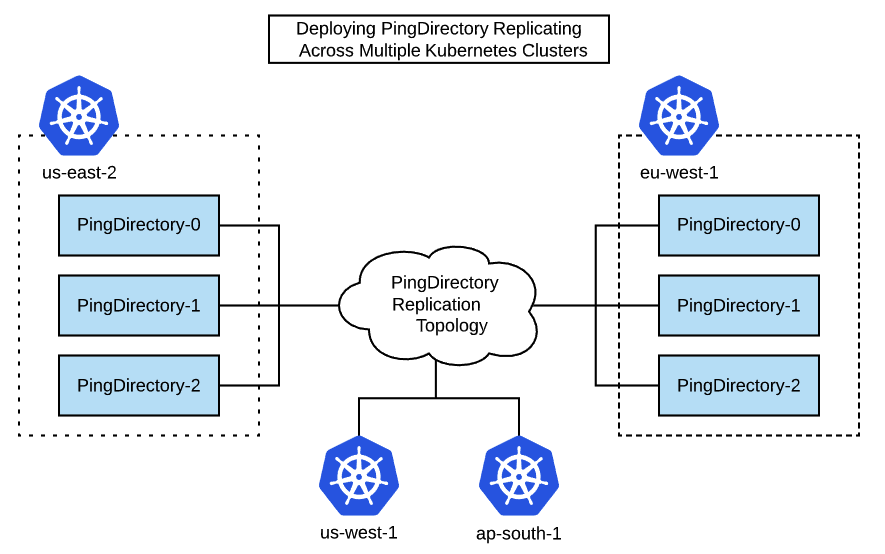

Deploy PingDirectory Across Multiple Kubernetes Clusters ¶
This example shows how to deploy PingDirectory containers that replicate across multiple Kubernetes clusters.

Overview ¶
Implementing a replicated PingDirectory topology across multiple Kubernetes clusters is desired for highly available active/active deployments as well as active/partial-active scenarios where a hot backup is expected.
PingDirectory Docker images abstract much of the complexity of replication initialization scripts, even across clusters. With this simplification, the focus shifts to providing accessible DNS hostnames across clusters and environment variables to build ordinal hostnames for each PingDirectory instance.
What You Will Do ¶
- PingDirectory Host Naming - Set the variables needed to create your hostnames
- Cluster Startup Walkthrough - A description of what happens when a PingDirectory cluster starts
- Deploy the Helm Example - Deploy an example set of servers across multiple Kubernetes clusters
Details within each Kubernetes cluster are hidden from outside the cluster, which means that external access to each pod in the cluster is required. The PingDirectory images will set up access to each of the pods using load balancers from an external host to allow each pod to communicate over the LDAP and replication protocols.
PingDirectory Host Naming ¶
The most important aspect of a successful PingDirectory cross-cluster deployment is assigning accessible and logical DNS hostnames. The rules for this setup include:
- Each PingDirectory pod needs its own hostname available in DNS
- Hostnames need to include the ordinal representing the instance in the statefulset
- All hostnames must be accessible to all directory instances
These rules still leave plenty of room for flexibility, particularly when accounting for the cluster-native DNS names Kubernetes creates.
Single Cluster Example with Multiple Namespaces ¶
For example, you can simulate a multi-cluster environment in a single Kubernetes cluster by using separate namespaces and creating a separate ClusterIP service for each directory environment. You would end up with something similar to this example:
Primary Cluster ¶
| Pod | Service Name | Namespace | Hostname |
|---|---|---|---|
| pingdirectory-0 | pingdirectory-0 | primary | pingdirectory-0.primary |
| pingdirectory-1 | pingdirectory-1 | primary | pingdirectory-1.primary |
| pingdirectory-2 | pingdirectory-2 | primary | pingdirectory-2.primary |
Secondary Cluster ¶
| Pod | Service Name | Namespace | Hostname |
|---|---|---|---|
| pingdirectory-0 | pingdirectory-0 | secondary | pingdirectory-0.secondary |
| pingdirectory-1 | pingdirectory-1 | secondary | pingdirectory-1.secondary |
| pingdirectory-2 | pingdirectory-2 | secondary | pingdirectory-2.secondary |
Production Example with External DNS Names ¶
An example from a production environment with external hostnames might appear more like this example:
us-west cluster ¶
| Pod | Service Name | DNS / Hostname |
|---|---|---|
| pingdirectory-0 | pingdirectory-0 | pingdirectory-0-us-west.ping-devops.com |
| pingdirectory-1 | pingdirectory-1 | pingdirectory-1-us-west.ping-devops.com |
| pingdirectory-2 | pingdirectory-2 | pingdirectory-2-us-west.ping-devops.com |
us-east cluster ¶
| Pod | Service Name | DNS / Hostname |
|---|---|---|
| pingdirectory-0 | pingdirectory-0 | pingdirectory-0-us-east.ping-devops.com |
| pingdirectory-1 | pingdirectory-1 | pingdirectory-1-us-east.ping-devops.com |
| pingdirectory-2 | pingdirectory-2 | pingdirectory-2-us-east.ping-devops.com |
Variables to Create Hostnames ¶
To provide flexibility on how each PingDirectory instance will find other instances, a full DNS hostname is broken into multiple variables.
| Variable | Description |
|---|---|
K8S_POD_HOSTNAME_PREFIX |
The string used as the prefix for all host names. Defaults to the name of the StatefulSet. |
K8S_POD_HOSTNAME_SUFFIX |
The string used as the suffix for all pod host names. Defaults to K8S_CLUSTER. |
K8S_SEED_HOSTNAME_SUFFIX |
The string used as the suffix for all seed host names. Defaults to K8S_SEED_CLUSTER (discussed later). |
With these variables, a full hostname is created in this manner:
${K8S_POD_HOSTNAME_PREFIX}<instance-ordinal>${K8S_SEED_HOSTNAME_SUFFIX}
Previous Hostname Example Breakdown ¶
| hostname | K8S_POD_HOSTNAME_PREFIX | K8S_POD_HOSTNAME_SUFFIX | K8S_SEED_HOSTNAME_SUFFIX |
|---|---|---|---|
| pingdirectory-0.primary | pingdirectory- |
.primary |
.primary |
| pingdirectory-2-us-west.ping-devops.com | pingdirectory- |
-us-west.ping-devops.com |
-us-west.ping-devops.com |
Environment Variables ¶
| Variable | Required | Description |
|---|---|---|
K8S_CLUSTERS |
*** | The total list of Kubernetes clusters to which the StatefulSet will replicate. |
K8S_CLUSTER |
*** | The Kubernetes cluster to which the StatefulSet will be deployed. |
K8S_SEED_CLUSTER |
*** | The Kubernetes cluster to which the seed server is deployed. |
K8S_NUM_REPLICAS |
The number of replicas that make up the StatefulSet. | |
K8S_POD_HOSTNAME_PREFIX |
The string used as the prefix for all host names. Defaults to StatefulSet. |
|
K8S_POD_HOSTNAME_SUFFIX |
The string used as the suffix for all pod host names. Defaults to K8S_CLUSTER. |
|
K8S_SEED_HOSTNAME_SUFFIX |
The string used as the suffix for all seed host names. Defaults to K8S_SEED_CLUSTER. |
|
K8S_INCREMENT_PORTS |
true or false. If true, the port for each pod will be incremented by 1. |
An example set of the YAML configuration for these environment variables is as follows:
Primary ¶
K8S_STATEFUL_SET_NAME=pingdirectory
K8S_STATEFUL_SET_SERVICE_NAME=pingdirectory
K8S_CLUSTERS=us-east-2 eu-west-1
K8S_CLUSTER=us-east-2
K8S_SEED_CLUSTER=us-east-2
K8S_NUM_REPLICAS=3
K8S_POD_HOSTNAME_PREFIX=pd-
K8S_POD_HOSTNAME_SUFFIX=.us-cluster.ping-devops.com
K8S_SEED_HOSTNAME_SUFFIX=.us-cluster.ping-devops.com
K8S_INCREMENT_PORTS=true
LDAPS_PORT=8600
REPLICATION_PORT=8700
These environment variable settings map out like this:
| Seed | Instance | Host name | LDAP | REPL |
|---|---|---|---|---|
| CLUSTER: us-east-2 | ||||
| *** | pingdirectory-0.us-east-2 | pd-0.us-cluster.ping-devops.com | 8600 | 8700 |
| pingdirectory-1.us-east-2 | pd-1.us-cluster.ping-devops.com | 8601 | 8701 | |
| pingdirectory-2.us-east-2 | pd-2.us-cluster.ping-devops.com | 8602 | 8702 |
Secondary ¶
K8S_STATEFUL_SET_NAME=pingdirectory
K8S_STATEFUL_SET_SERVICE_NAME=pingdirectory
K8S_CLUSTERS=us-east-2 eu-west-1
K8S_CLUSTER=eu-west-1
K8S_SEED_CLUSTER=us-east-2
K8S_NUM_REPLICAS=3
K8S_POD_HOSTNAME_PREFIX=pd-
K8S_POD_HOSTNAME_SUFFIX=.eu-cluster.ping-devops.com
K8S_SEED_HOSTNAME_SUFFIX=.us-cluster.ping-devops.com
K8S_INCREMENT_PORTS=true
LDAPS_PORT=8600
REPLICATION_PORT=8700
| Seed | Instance | Host name | LDAP | REPL |
|---|---|---|---|---|
| CLUSTER: eu-west-1 | ||||
| pingdirectory-0.eu-west-1 | pd-0.eu-cluster.ping-devops.com | 8600 | 8700 | |
| pingdirectory-1.eu-west-1 | pd-1.eu-cluster.ping-devops.com | 8601 | 8701 | |
| pingdirectory-2.eu-west-1 | pd-2.eu-cluster.ping-devops.com | 8602 | 8702 |
Cluster Startup Walkthrough ¶
By now you can see that there are many variables that have been described. These variables exist to provide flexibility to accommodate various infrastructure constraints. For example, in some environments you cannot use the same port for each instance, so we must accommodate incrementing ports.
Continuing, it is helpful to know what happens when a cluster starts in order to understand why the initial creation of a cluster must be very prescriptive.
-
The first pod must start on its own and become healthy. This startup is critical to prevent replication islands. The very first time the very first pod starts, we call it "GENESIS". All other pods are dependent on this
SEED_PODin theSEED_CLUSTERstarting correctly by itself. The entire purpose of definingSEED_PODandSEED_CLUSTERvariables is avoid multiple genesis scenarios. -
After the first pod is healthy, it begins querying DNS for combinations of hostnames at their LDAPS port to find another PingDirectory instance.
In our first cluster, this would be the hostname of pingdirectory-1, but it could also be pingdirectory-0 of another cluster. After the query returns successful, creation of the replication topology automatically begins. From this point onward, the order in which instances start is less important.
Deploying Across Multiple Regions with Multiple Load Balancers ¶
If infrastructure constraints prevent you from using Peered Clusters, an alternate option is to deploy with a separate LoadBalancer service for each PingDirectory pod.
The following diagram shows how you can use muliple load balancers.

Advantages:
- Use the same well-known port, such as 1636/8989
- Separate IP addresses per instance
Disadvantages:
- DNS management
- Separate hostname required per pod
This method is supported in our Helm charts with the pingdirectory.services.loadBalancerServicePerPod field.
Deploy the Helm Example ¶
Clone this getting-started repository to get the Helm values .yaml files for the exercise. There are two multi-region examples. For peered clusters, the example files are under the folder 30-helm/multi-region/pingdirectory. For deploying with multiple load balancers, the example files are under the folder 30-helm/multi-region/pingdirectory-loadbalancer-per-pod. After cloning:
-
Modify any external hostnames in the sample files as necessary - see the lines under
## CHANGEMEcomments. -
Deploy the first set of pods (the example here uses kubectx to set the kubectl context).
kubectx west helm upgrade --install example pingidentity/ping-devops -f 01-west.yaml -
Wait for the example-pingdirectory pods to be running and ready.
-
Deploy the second set of pods.
kubectx east helm upgrade --install example pingidentity/ping-devops -f 02-east.yaml -
Wait for all example-pingdirectory pods to be running and ready.
-
Verify that pods are replicating.
kubectx west kubectl exec example-pingdirectory-0 -- dsreplication status --showAll
Cleanup ¶
kubectx west
helm uninstall example
kubectl delete pvc --selector=app.kubernetes.io/instance=example
kubectx east
helm uninstall example
kubectl delete pvc --selector=app.kubernetes.io/instance=example